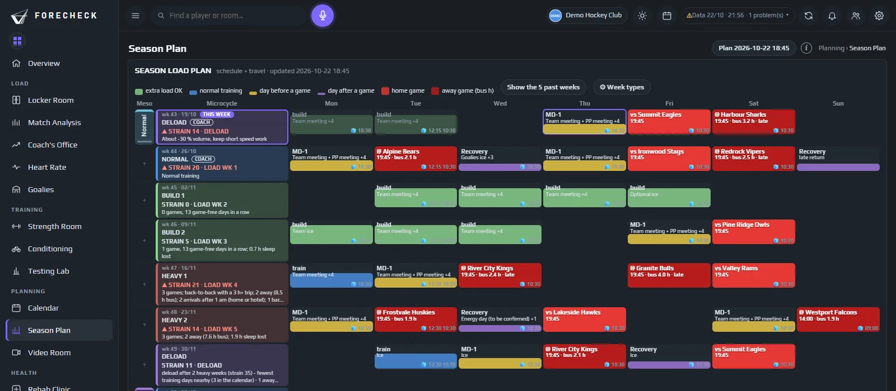
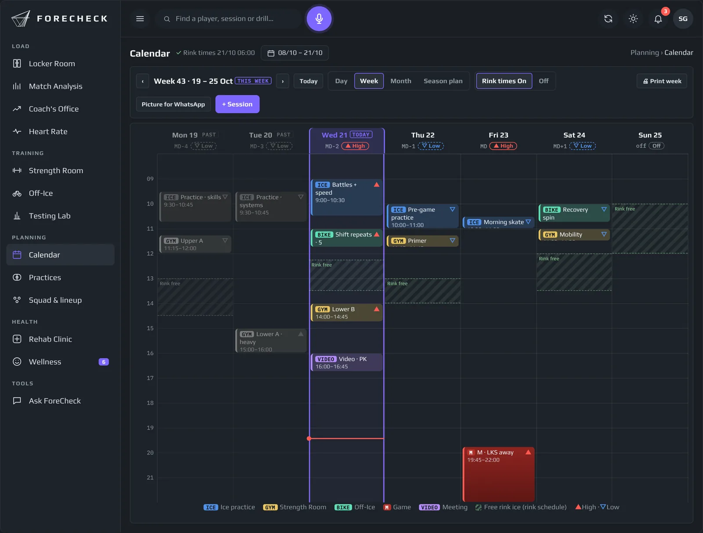

Calendar · piano stagionale
Tutti al posto giusto.

Novità di questa stagione
Orari del ghiaccio nel calendario
iAltro
ForeCheck legge gli orari pubblici della pista più volte al giorno e mostra il ghiaccio libero dietro le vostre sedute.

Su ogni telefono
Un link per giocatore, sempre aggiornato
iAltro
Ogni giocatore e ogni membro dello staff riceve un link privato al calendario per il telefono. Partite, allenamenti, sedute in palestra e di riabilitazione compaiono da sole, e le modifiche arrivano senza un messaggio nella chat di gruppo.
Oggi
- Allenamento sul ghiaccio
- Bike di recupero · 20 min
- Trasferta · pullman 15:00
Abbonato · si aggiorna da solo
Carico di viaggio
Settimane pesanti in trasferta, segnalate in anticipo
iAltro
L’intero calendario della lega viene importato e mantenuto aggiornato. Le settimane con lunghi viaggi in pullman e arrivi a notte fonda vengono segnalate, così il recupero si pianifica prima della trasferta, non dopo.
Settimana 42 · trasferte
- GioPullman 780 km · arrivo 02:10
- VenPartita in trasferta
- SabTrasferta · a casa alle 03:40
- DomGiorno di recupero previsto
Piano stagionale
Pianificare le settimane dure e quelle leggere
iAltro
Gli obiettivi di carico settimanali di tutta la stagione stanno accanto al calendario delle partite. Man mano che le settimane si giocano, il carico reale si riempie, così vedete subito quando piano e realtà si allontanano.
Gruppi
- Attaccanti12
- Difensori8
- Portieri3
- Gruppo riabilitazione2
- Juniores aggregati4
Le domande a cui risponde
Cosa decidete con ForeCheck
- Chi deve essere dove questa settimana?
- Quali trasferte richiedono un giorno di recupero in più?
- Siamo in linea con il piano stagionale?
- Ogni giocatore ha ricevuto il cambio di programma?